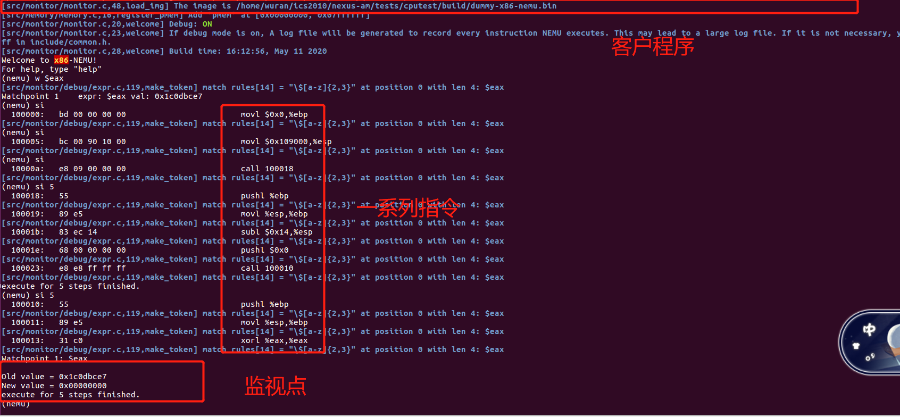
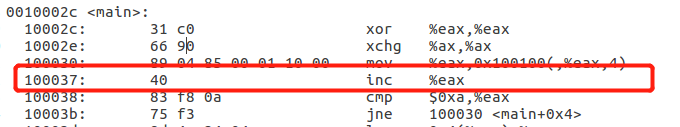

PA1中我们已经对NEMU项目的源码进行了仔细阅读，并且实现了简易的监视器组件。然而正如我们在PA1中所述，当前的NEMU还不是完整的计算机系统，因为cpu可执行的指令有限。在PA2中，我们将完善这一缺陷。
之前我们提到，图灵机模型就是通过pc取得一串指令，然后执行指令，并更新pc的迭代过程。即：
while(state == good_state){
instr = instr_fetch(pc); // fetch one instruction
execute_instr(instr); // execute one instruction
state = update_state(state, ...);
monitor(state); // make sure system is working properly
update_pc();
}
在NEMU中，我们引入了存储程序：即将程序完整的存储在内存中，只需要通过pc读取二进制执行文件执行即可运行程序。在此基础上，如果能再加入IO等功能，NEMU就可以成为冯诺依曼计算机了。在PA2中，由于时间关系，我们未将IO交互的实现纳入其中。因此本次PA后，NEMU实际上是：图灵机之上，冯诺依曼计算机之下。
由于计算机硬件的设计，计算机只能看懂01序列构成的位串(高低电位)，无法读懂汇编语言或其他高级语言。对计算机来说，运行一个程序需要读入一串二进制串表示的指令，然后通过查询，获取指令的功能及操作数，然后执行指令并修改计算机状态。对程序设计者来说，运行一个程序需要使用高级语言写入一段程序，然后借助编译器将程序转成二进制串，供计算机执行。这两个过程的交互由一套共同的“密码本”决定。计算机通过“密码本”对指令进行译码，编译器通过“密码本”对程序进行“加密”。
NEMU中已经自带了编译器，因此为了在NEMU中可以运行客户程序。我们只需要在计算机的角度，实现译码和执行的过程。
CPU执行指令的过程，一般可视为取指——译码——执行三个过程(在mips32中分为更精细的五个周期：IF-ID-EX-MEM-WB)。PA2就是基于x86指令集架构，实现译码和执行两个过程。 在PA2中，你可能一开始无法下手写代码，这表示你需要阅读一定量的技术文献才能写出可执行和正确的代码。
本次PA2下主要分为以下内容：
正式开始本次PA1之前，请大家先按照以下命令做好git项目的分支管理
cd ~/ics2020 ## 进入ics项目
git commit --allow-empty -am "before starting pa2" ## commit
git checkout master ## 切换到主分支
git merge pa1 ## 将pa1合并到主分支
git checkout -b pa2 ## 新建并切换到pa2分支
git branch ## 确保当前位于pa2分支
为了顺利完成PA2的内容，我们首先给出以下参考资料：
在介绍指令编码之前，先看一看我们熟悉的汇编语言。比如下面这条指令：
movl %edi, %eax (AT&T格式，R[%eax]=R[%edi])
实际构成一条指令的要素主要包括两方面：指令功能(如mov)，指令操作数。给定了指令的具体功能和操作数之后，计算机才能完成指令的具体功能。在指令编码中，指令功能使用操作码(opcode进行编码)，在操作码后，对操作数进行编码。比如上面的指令在x86中，编码为：
89(mov) 11(mod) 000(%eax) 111(%edi) ==> 89 C7
即89 C7编码了movl %edi, %eax这条指令。其中89为指令的opcode，表明指令功能是mov。C7=1100 0111中包含了指令寻址方式和操作数，其高位两位11，表明mov是由寄存器到寄存器，后三位000编码了寄存器%eax，最后三位111编码了寄存器%edi。指令解读将在后面详细介绍。
由于x86指令集架构属于复杂指令集架构的一种，因此其指令长度不固定，并且指令数目繁多，是本次PA要理解的重点和难点。
x86指令长度不固定，形式复杂。其一般形式如下所示(详细介绍见i386手册17.2节)：
+-----------+-----------+-----------+--------+------+------+------+------------+-----------+
|instruction| address- | operand- |segment |opcode|ModR/M| SIB |displacement| immediate |
| prefix |size prefix|size prefix|override| | | | | |
|-----------+-----------+-----------+--------+------+------+------+------------+-----------|
| 0 OR 1 | 0 OR 1 | 0 OR 1 | 0 OR 1 |1 OR 2|0 OR 1|0 OR 1| 0,1,2 OR 4 |0,1,2 OR 4 |
| - - - - - - - - - - - - - - - - - - - - - - - - - - - - - - - - - - - - - - - - - - - - -|
| number of bytes |
+------------------------------------------------------------------------------------------+
其中：
register，M表示memory)除了opcode(操作码)必定出现之外, 其余组成部分可能不出现, 而对于某些组成部分, 其长度并不是固定的。但给定一条具体指令的二进制形式, 其组成部分的划分是有办法确定的, 不会产生歧义(即把一串比特串看成指令的时候, 不会出现两种不同的解释)。例如对于以下指令:
100017: 66 c7 84 99 00 e0 ff ff 01 00 movw $0x1,-0x2000(%ecx,%ebx,4)
其组成部分的划分如下:
+-----------+-----------+-----------+--------+------+------+------+------------+-----------+
|instruction| address- | operand- |segment |opcode|ModR/M| SIB |displacement| immediate |
| prefix |size prefix|size prefix|override| | | | | |
|-----------+-----------+-----------+--------+------+------+------+------------+-----------|
| 66 c7 84 99 00 e0 ff ff 01 00 |
+------------------------------------------------------------------------------------------+
凭什么0x84要被解释成ModR/M字节呢? 这是由opcode决定的, opcode决定了这是什么指令的什么形式, 同时也决定了opcode之后的比特串如何解释。如果你要问是谁来决定opcode, 那你就得去问Intel了。
PA中的x86经过简化, address-size prefix和segment override prefix都不会用到, 因此NEMU也不需要实现这两者的功能。
ModR/M字节指定了指令寻址方式。ModR/M字节分为三部分(mod, reg/opcode, r/m)，如下所示：
ModR/M byte
7 6 5 4 3 2 1 0
+--------+-------------+-------------+
| mod | reg/opcode | r/m |
+--------+-------------+-------------+
其中mod指定了访问对象是寄存器还是内存，只有当mod=0b11时，访问对象才为寄存器，此时r/m三位表示寄存器编码。当mod=0b00, 0b01, 0b10时，访问对象为内存,对应三种寻址模式。此时r/m三位表示特定寻址方式。因此一共有3中寻址模式*8种寻址方式=24种寻址。而reg/opcode有两种情况：一是表示寄存器；而是表示操作码的延伸。 如下图所示：
上图中上方代表寄存器编号。下方ModR/M字节的mod域(filed)取0b00时，表示寄存器寻址，类似于(%reg)；为0b01，表示(基址+偏移量寻址)，类似于disp8(%reg)的形式。ModR/M还指定了SIB字节是否存在。如上图中r/m取0b100时，[--] [--]表明需要通过SIB字节进行寻址。
SIB(Scale-Index-Base byte)字节，也包含三个域：ss, index, base。其划分如下所示：
SIB (scale index base) byte
7 6 5 4 3 2 1 0
+--------+-------------+-------------+
| ss | index | base |
+--------+-------------+-------------+
含有SIB字节表示寻址方式为比例变址寻址。其中ss域指定了scale，index域指定了索引寄存器，base域指定了基址寄存器。其一般形式为M[R[base]+R[index]*scale+disp]。比如指令movl (%eax, %ecx, 2), %esi, 其中opcode为8B，寻址方式为比例变址寻址，因此需要ModR/M和SIB字节，寻址中没有偏移量，因此ModR/M字节的mod域为0b00，reg/opcode域编码了寄存器%esi，为0b110，r/m域为0b100。因此ModR/M字节为0b00110100=0x34。SIB字节中，scale为2，因此ss域为0b10；索引寄存器为%ecx，index域为0b001；基址寄存器为%eax，因此base域为0b000。得到SIB字节为0b10001000=0x88。因此movl (%eax, %ecx, 2), %esi指令编码如下：
8B 34 88 movl (%eax, %ecx, 2), %esi ## AT&T
思考: 指令movl -0x8(, %eax, 2), %ebx ## AT&T的编码应该是怎样的，请将其写在本次的报告中。
由于x86指令集架构属于复杂指令集架构。如果操作码仅仅用一个字节进行编码，指令数目为256，无法满足需求。因此操作码还需要进行扩充。
x86使用两种方法扩充操作码：
x86中有一个2字节转义码0x0f, 当指令opcode的第一个字节是0x0f时, 表示需要再读入一个字节才能决定具体的指令形式(部分条件跳转指令就属于这种情况)。后来随着各种SSE指令集的加入, 使用2字节转义码也不足以表示所有的指令形式了, x86在2字节转义码的基础上又引入了3字节转义码, 当指令opcode的前两个字节是0x0f和0x38时,表示需要再读入一个字节才能决定具体的指令形式。reg/opcode域扩充。有些时候, 读入一个字节也还不能完全确定具体的指令形式, 这时候需要读入紧跟在opcode后面的ModR/M字节, 把其中的reg/opcode域当做opcode的一部分来解释, 才能决定具体的指令形式。x86把这些指令划分成不同的指令组(instruction group), 在同一个指令组中的指令需要通过ModR/M字节中的扩展opcode域来区分。阅读i386指令，主要通过阅读i386手册17章的指令说明及附录1的指令编码表进行理解。以熟悉的mov指令为例，首先在手册第345页查得mov指令说明如下图：

首先注意i386手册的指令是按照Intel格式，而不是AT&T格式。因此dest目的操作数在前，src源操作数在后。
上图中操作码为8B的已经在上面介绍过了(8A类似)，下面分组介绍其他指令。
首先对上图表做一些说明。
第一列opcode表示操作码，紧跟操作码的符号/r, +rb, +rw等属于操作码的补充说明，在手册246-248页有详细说明。其中/r表示ModR/M字节的reg/opcode域表示寄存器而不是操作码的延伸。+rb, +rw表示将目的寄存器编码嵌入操作码后三个字节，形成新的操作码。
第二列instruction表示遵循Intel格式的指令内容。其中r/m表示寄存器或内存，r8表示单字节寄存器，r/m8表示单字节的寄存器或者内存。
第四列Description是指令的文字说明。
mov r/m, r
这类指令是将寄存器内容转移到寄存器或内存中。包括操作码为89, 88三行内容。与操作码8B的指令类似，不再赘述。
比如8B 34 88编码了指令movl (%eax, %ecx, 2), %esi ## AT&T，修改操作码为89，即可编码指令
movl %esi, (%eax, %ecx, 2) ## AT&T为89 34 88。
mov r/m16, Sreg 和 mov Sreg, r/m16
其中Sreg表示段寄存器，PA中不需要实现，不再赘述。
opcode 为A0, A1, A2, A3
其中moffs用来表示段内偏移量, 但PA中的x86没有"段"的概念, 目前可以理解成"相对于物理地址0处的偏移量"。这6种形式是mov指令的特殊形式, 它们可以不通过ModR/M字节, 让displacement直接跟在opcode后面, 同时让displacement来指示一个内存地址。
操作码为B0, B8
这类mov指令表示将立即数转移到寄存器中。注意+rb +rw +rd指定了操作数宽度，b, w, d分别表述字节，字和双字。+表示目的寄存器嵌入到了操作码中。比如下面的汇编指令：
movl $0x8, %ecx ## AT&T格式
对应操作码为B8+rd，B8表示为0b10111000，寄存器%ecx编码为0b001，因此合成的操作码为0b10111001，原操作码B8后三位变为目的寄存器的编码。因此整条指令被编码为：
B9 00 10 00 00 movl $0x8, %ecx ## 注意操作码后面跟立即数，是小端表示
为更进一步了解此指令，你还可以查阅i386手册附录1的操作码表格，找到B9这一栏。 如下图所示：
操作码B9表示将立即数转移到寄存器%ecx。与上面的结果一致。
要看懂附录1的操作码表格，你需要仔细阅读手册413页的符号说明，比如G, I, E, J, r等。
上面我们提到，cpu执行指令需要经过取指(IF)——译码(ID)——执行(EX)三个大致过程。前面我们提到cpu执行一条指令是通过调用exec_once()函数(定义在nemu/src/cpu/cpu.c中)，而exec_once()函数调用了isa_exec()函数(定义在nemu/src/isa/x86/exec/exec.c)中，isa_exec()函数又调用了idex()函数(定义在nemu/include/cpu/exec.h中)。这里我们复制isa_exec()和idex()函数内容如下：
void isa_exec(vaddr_t *pc) { // in nemu/src/isa/x86/exec/exec.h
uint32_t opcode = instr_fetch(pc, 1);
decinfo.opcode = opcode;
set_width(opcode_table[opcode].width);
idex(pc, &opcode_table[opcode]);
}
static inline void idex(vaddr_t *pc, OpcodeEntry *e) { // in nemu/include/cpu/exec.h
if (e->decode)
e->decode(pc);
e->execute(pc);
}
可以看出isa_exec()函数负责取得指令，并根据操作码表设定操作数宽度，然后交由idex完成译码和执行。(idex其实就是id(instruction decode)和ex(execute)的组合)。
此节我们将对这三个过程进行详细介绍，最后介绍NEMU中怎么更新pc。
我们知道，pc表示的当前指令的地址，取指令实际上就是一次内存的访问：instr = mem[pc]。实际上，根据pc取指令还需要考虑指令长度这一因素。缺乏指令长度则无法对指令进行正确译码。此外在更新pc时，由于错误的指令长度，导致下一次取得错误的指令，要么取得非法指令，要么取得可执行指令，都会改变程序的正常运行状态。
提及指令及指令长度，不得不涉及基于两种指令集架构的计算机：RISC(Reduced Instruction-Set Computer，精简指令集计算机)和CISC(Complex Instruction-Set Computer，复杂指令集计算机)。这两种指令集架构计算机的出现是对指令CPI和指令集功能的不同折衷结果。以mips32为代表的RISC指令集架构计算机，指令数目更少，指令长度固定，指令CPI更小；而以x86为代表的CISC指令集架构计算机，指令数目更多，功能更多，但同时指令长度不固定并且指令CPI更大。
在PA中，我们选取的指令集架构为x86，这表示PA2中我们将不得不面对长度不固定，功能复杂的一系列指令。因此对i386第17章及附录部分的阅读理解非常重要。
由于取指只是一次内存的访问，NEMU通过instr_fetch函数(nemu/include/cpu/exec.h)，instr_fetch()通过pc和传递的指令长度对内存进行访问，返回一条指令。
译码的目的是得到指令的操作和操作对象, 这主要是通过查看指令的opcode(操作码)来决定的。不同ISA的opcode会出现在指令的不同位置, 我们只需要根据指令的编码格式, 从取出的指令中抽取出相应的opcode即可。
取出opcode之后, 框架代码用它来对opcode_table数组进行索引, 取出其中的一个OpcodeEntry类型(定义在nemu/include/cpu/exec.h)的元素。opcode_table数组其实就是我们之前提到的“密码本”, 这一张表通过操作码opcode来索引, 它记录了每一个opcode对应指令的译码辅助函数, 执行辅助函数, 以及操作数宽度。有了这些信息, 我们就可以得知指令的具体操作了, 例如对两个寄存器进行加法操作。
其中OpcodeEntry结构体定义如下：
typedef struct {
DHelper decode; ## 译码辅助函数
EHelper execute; ## 执行辅助函数
int width; ## 操作数宽度
} OpcodeEntry;
译码辅助函数
为了结构化整个系统，NEMU引入了译码辅助函数来对不同类型的操作码进行译码，得到操作数，操作数宽度等一系列信息，这些信息保存在全局结构体decinfo(定义在nemu/include/cpu/decode.h)中。
译码辅助函数就是通过宏make_DHelper定义(宏位于nemu/include/cpu/decode.h)的一系列函数
，具体形式如下：
#define make_DHelper(name) void concat(decode_, name) (vaddr_t *pc)
根据不同操作码的功能，对应不同的name，比如跳转J，寄存器r，因此对应了不同译码辅助函数decode_J，decode_r。其中name需要根据i386手册附录1操作码表格对应操作码功能进行查找。在nemu/src/isa/x86/decode/decode.c定义了一系列译码辅助函数，可供完成PA2过程中参考。
由于译码辅助函数根据不同指令的name需要得到不同操作数，而很多时候不同指令的操作数是“相同”的。比如add %eax, %ecx和test %eax, %eax。这表示如果一种类型的操作码附带一种译码辅助函数，会造成大量重复的代码段。因此NEMU框架中额外定义了操作数译码辅助函数，根据操作数类型进行辅助译码。由此上面add %eax, %ecx和test %eax, %eax只需要调用同种操作数译码辅助函数即可。因为操作数类型都是寄存器。具体地，操作数译码辅助函数与译码辅助函数类似，都是通过宏定义的一系列函数：
// nemu/src/isa/x86/decode/decode.c
#define make_DopHelper(name) void concat(decode_op_, name) (vaddr_t *pc, Operand *op, bool load_val)
框架代码已经实现了一些列译码辅助函数和操作数译码辅助函数，你可以通过阅读nemu/src/isa/x86/decode/decode.c文件体会将指令译码和操作数译码分开的好处。
如上所述，译码辅助函数处理指令，将信息保存在结构体decinfo中。decinfo(定义在nemu/include/cpu/decode.h中)结构体如下：
typedef struct {
uint32_t opcode; ## 操作码
uint32_t width; ## 操作数宽度
vaddr_t seq_pc; ## 序列化pc，指向序列下一条指令，而不是跳转指令
bool is_jmp; ## 是否跳转
vaddr_t jmp_pc; ## 跳转的pc地址
Operand src, dest, src2; ## 源操作数和目的操作数
struct ISADecodeInfo isa; ## 与ISA有关的译码信息
} DecodeInfo;
译码信息包含了操作码、操作数宽度、序列化pc，是否跳转及跳转地址、源操作数和目的操作数、与ISA有关的指令。其中序列化pc指的是当前指令的下一条指令。如下所示：
0x100000: movl %eax, %ecx
pc->0x100003: call 0x10002e<main>
0x100005: addl $4, $edi
当前pc位于0x100003时，seq_pc指向下一条指令地址0x100005而不是0x10002e。它指向下一条静态指令。
结构体ISADecodeInfo定义在nemu/src/isa/x86/include/isa/decode.h中。
操作数及操作数宽度
如全局译码信息decinfo被保存为结构体，操作数也被封装为一个结构体Operand(定义在nemu/include/cpu/decode.h中)。具体信息如下：
typedef struct {
uint32_t type; ## 类型
int width; ## 宽度
union {
uint32_t reg; ## 寄存器
rtlreg_t addr; ## 地址
uint32_t imm; ## 立即数
int32_t simm; ## 符号扩展立即数
};
rtlreg_t val;
char str[OP_STR_SIZE];
} Operand;
NEMU中获取指令的操作数宽度流程如下： 首先通过查询opcode_table中记录的操作数宽度; 若这一操作数宽度结果为0, 表示仅仅根据操作码来判断, 操作数宽度还不能确定, 可能是16位或者32位, 需要通过decinfo.isa.is_operand_size_16成员变量来决定。这其实实现了"操作数宽度前缀"的相关功能。整个过程由set_width()函数完成(定义在nemu/src/isa/x86/exec/exec.c中)。 这里简要对“操作数宽度前缀做说明”，我们知道x86指令编码操作码前面可以包含操作码前缀。当操作码前缀为0x66，表示操作数宽度被定义为16位，当操作码前缀为0x67时，表示地址宽度为16位。
当译码辅助函数将译码信息写入decinfo结构体后，将调用执行辅助函数执行指令。执行辅助函数也是用make_EHelper宏(定义在nemu/include/cpu/exec.h)定义的一系列函数:
#define make_EHelper(name) void concat(exec_, name) (vaddr_t *pc)
不同功能的指令对应的执行辅助函数通过name进行区分，name是指令操作本身。比如exec_mov表示mov，而exec_add表示add。你可以在nemu/src/isa/x86/include/exec/all-instr.h中查看一些已经定义好的执行辅助函数。
执行辅助函数通过RTL指令来描述指令真正的执行功能(RTL指令将在下文介绍)。
特别地, 对于x86来说, 大部分计算指令都可以访问内存, 于是框架代码提供了operand_write()函数(在nemu/src/isa/x86/decode/decode.c中定义), 来根据目的操作数类型的不同, 决定是写入寄存器还是写入内存。
为了更新pc, 我们需要确定刚刚执行完的指令的长度。事实上, 在instr_fetch()中, 每次取指都会更新它的pc参数, 而这个参数就是在exec_once()调用isa_exec()时传入的decinfo.seq_pc。在isa_exec()执行的过程中, decinfo.seq_pc将会随着取出的指令长度而增长. 因此当代码从isa_exec()返回时, decinfo.seq_pc将会指向下一条静态指令的地址, 此时通过update_pc()(在nemu/include/cpu/exec.h中定义)对pc进行更新即可。
前面我们提到了，为了扩充指令功能，指令的长度可能是多个字节，或者由ModR/M的reg/opcode域扩充而来。译码的时候怎么进行区分呢？
事实上，我们已经有了一张译码表opcode_table，而多字节操作码包含前导的转义码(escape code)，因此遇到instr_fetch得到的操作码是前导转义码时，只需要额外定义一个辅助函数告诉系统，还需要再读入一个字节即可。这个函数为exec_2byte_esc，定义在nemu/src/isa/x86/exec/exec.c中。你可以阅读这个函数的内容，理解NEMU怎么处理两个字节的操作码。
而对于ModR/M的reg/opcode域作为操作码延伸的情况，在i386手册的操作码说明中，用/digit表示。其中digit数值为0-7。这类操作码被组成一组指令组(nemu/src/isa/x86/exec/exec.c中make_group)，需要通过reg/opcode告诉执行辅助函数指令的具体功能。如i386手册中下图：

第一组指令包含了(add, or, adc, sbb, and, xor, cmp)。仅仅依靠一字节的操作码只能确定指令的功能在指令组1中，还需要通过ModR/M的reg/opcode域确定具体是什么功能。由于对ModR/M字节的译码已经在框架代码中完成，因此只需要完成nemu/src/isa/x86/exec/exec.c中make_group每一组各个位置对应的执行辅助函数即可。
为了在NEMU执行客户指令，我们还需要对NEMU的opcode_table进行完善。opcode_table有一些已经填好的IDEXW(DHelper, EHelper, width)，你可以进行阅读并作为完善指令的参考。在介绍怎么添加新指令前，我们先介绍两部分内容：已定义的宏和寄存器传输语言(RTL)。
已定义的宏
为更高效完成PA2的要求，NEMU中定义了一系列的宏可供调用，实际操作中id_src, id_src2, id_dest三个宏使用频率很高：

寄存器传输语言(RTL)
我们知道，NEMU是用软件模拟的一套计算机系统。因此对指令的实现也要借助于软件。比如寄存器数据的传输，内存的访问等。为方便这一系列过程，NEMU中引入了寄存器传输语言(RTL)用于实现简单指令功能。然后在执行辅助函数中，只需要调用RTL实现的指令功能函数即可。
下面对NEMU中使用的RTL进行一些说明, 首先是RTL寄存器的定义。在NEMU中, RTL寄存器统一使用rtlreg_t来定义, 而rtlreg_t(在nemu/include/common.h中定义)其实只是一个uint32_t类型:
typedef uint32_t rtlreg_t;
在NEMU中, RTL寄存器只有以下这些
nemu/src/isa/$ISA/include/isa/reg.h中定义)id_src, id_src2和id_dest中的访存地址addr和操作数内容val(在nemu/include/cpu/decode.h中定义)。s0, s1, t0, t1和ir(在nemu/src/cpu/cpu.c中定义)有了RTL寄存器, 我们就可以定义RTL指令对它们进行的操作了。在NEMU中, RTL指令有两种：
一种是RTL基本指令(在nemu/include/rtl/rtl.h中定义), 它们的特点是不需要使用临时寄存器, 可以看做是CPU执行过程中最基本的操作。不同的ISA都可以使用RTL基本指令, 因此它们属于ISA无关的代码。RTL基本指令包括(我们使用了一些简单的正则表达式记号):
rtl_lirtl_mvrtl_(add|sub|and|or|xor|shl|shr|sar|i?mul_[lo|hi]|i?div_[q|r]), 这些运算的定义用到了nemu/include/rtl/c_op.h中的C语言运算rtl_i?div64_[q|r]rtl_lm和rtl_smrtl_host_lm和rtl_host_smrtl_setrelop, 具体可参考nemu/src/cpu/relop.crtl_j, 间接跳转rtl_jr和条件跳转rtl_jreloprtl_exit(在nemu/src/monitor/cpu-exec.c中定义)在代码中使用上述函数的时候, 只需要编写rtl_xxx即可。
第二种RTL指令是RTL伪指令, 它们是通过RTL基本指令或者已经实现的RTL伪指令来实现的. RTL伪指令又分两类, 包括:
nemu/include/rtl/rtl.h中定义)rtl_(add|sub|and|or|xor|shl|shr|sar|i?mul_[lo|hi]|i?div_[q|r])_irtl_not, 符号扩展rtl_sext等nemu/src/isa/$ISA/include/isa/rtl.h中定义)rtl_lr和rtl_sr其中大部分RTL伪指令还没有实现, 必要的时候你需要实现它们. 有了这些RTL指令之后, 我们就可以方便地通过若干条RTL指令来实现每一条指令的行为了。
调用规定
dest之外的寄存器存放中间结果. 由于dest最后会被写入新值, 其旧值肯定要被覆盖, 自然也可以安全地作为RTL伪指令的临时寄存器。ir(immediate register) —— 只能作为rtl_li的目的RTL寄存器t0, t1 —— 只能在RTL伪指令的实现过程中存放中间结果s0, s1 —— 只能在译码辅助函数和执行辅助函数的实现过程中存放中间结果思考：上述将临时寄存器在不同函数中分类型使用是否有必要。如果在实现一个执行辅助函数make_EHelper()过程中使用了t0而不是s0存放结果，然后又调用了RTL基本指令rtl_xxx，而rtl_xxx中也使用了t0存放临时结果。这时候执行辅助函数执行结果还正确么？请将你的思考写在本次报告中。
添加指令
有了临时寄存器，RTL指令后，添加一个新指令就非常简单了：
make_EHelper宏定义执行辅助函数exec_nameopcode_table中填写正确的译码辅助函数, 执行辅助函数以及操作数宽度实际上，RTL指令都定义好了，只是等待你去实现。具体文件在nemu/src/isa/x86/exec文件夹中，比如arith.c定义了基本算术，logic.c定义了基本逻辑运算，control.c定义了基本控制转移。
前面PA1我们提到NEMU有一个内置的程序，如果未提供客户程序，将加载内置程序进行执行。反过来，如果我们为其提供客户程序，NEMU能否正常执行完客户程序呢？这正是本节要介绍的内容。
方案一： 编译+运行
在terminal中，输入以下命令可以运行位于ics2020/nexus-am/tests/cputest/tests下的c文件。
cd ics2020/nexus-am/tests/cputest
make ARCH=x86-nemu ALL=$program run ## $program代表具体程序名，如ALL=dummy
然后NEMU就会编译$program.c然后运行。这种方案会导致程序一次性运行完毕，无法进行调试。因此我们准备了方案二如下：
编译客户程序
NEMU提供了一些测试函数，位于ics2020/nexus-am/tests/cputest/tests下。该文件夹包含了一系列C语言文件。为得到二进制执行文件，只需要在terminal中执行下面的命令
cd ics2020/nexus-am/tests/cputest
make ARCH=x86-nemu ## 指定运行时环境为基于x86指令集架构的nemu
然后在ics2020/nexus-am/tests/cputest/build下有编译好的二进制文件。
设置客户程序
PA1中我们提到，NEMU启动时，调用了monitor.c中的一系列初始化函数，仔细阅读monitor.c文件，通过修改其中img_file内容为编译好的二进制程序路径即可在NEMU启动的时候加载我们编译好的客户程序了。
思考：既然NEMU可以执行二进制程序，是否可以直接通过gcc将C语言文件编译后交由NEMU执行。如果可以，那么在main.c里调用system命令完成指定C语言文件编译(回想PA1下在gen_expr.c中编译程序)，然后将二进制文件路径传入monitor.c中即可实现NEMU自动化运行C文件。如下所示：
make ISA=nemu -f $prgram.c run ## $program.c指定了C文件的路径
这不就是gcc $program.c -o $program和./$program做的事情吗。上述方案是否可行呢？请做出你的思考，并在报告中进行简要说明。
调试客户程序
设置好客户程序路径后，直接make ISA=x86 run即可启动NEMU，并且自动加载客户程序。然后用PA1下中实现的监视点即可对客户程序进行调试。如下图所示：

如果遇到未实现的指令，NEMU也会及时抛出错误，如下图所示：
 图中指出了操作码为
图中指出了操作码为0x40的指令还未实现。查阅i386手册附录1得到0x40功能是实现自增运算。为了确认NEMU抛出错误的位置是正确的，还可以通过查看nemu/nexus-am/tests/cputest/build/$program-x86-nemu.txt中的反汇编代码进行对比。如下图

依照报错的pc=0x100037位置，查得汇编代码为inc %eax，说明NEMU抛出错误的位置正确，间接反映之前的指令运行是正确的。
由于nemu/nexus-am/tests/cputest/tests下C语言文件太多，为减轻即将期末季大家的负担。本次PA2要求如下：
nemu/nexus-am/tests/cputest/tests/dummy.c，为此在sub和add等指令时，你还需要额外在CPU_State结构体中定义一个标志寄存器，NEMU中只需要CF, ZF, SF, OF, IF5个标志寄存器。如果你不清楚标志寄存器内存分布，请参考i386手册第34页Eflags寄存器构造。注意在sub, add等指令过程中，要及时修改5个标志寄存器的值(阅读nemu/src/isa/x86/include/isa/rtl.h，完成与上述标志寄存器有关的函数即可)。nemu/nexus-am/tests/cputest/tests/add.c提示:检查加法、减法是否溢出，实际上是检查符号位。以加法为例：
sum = x + y;
溢出： (x>0 && y>0 && sum<0) || (x<0 && y<0 && sum>=0)
这表示x与y同号而与sum异号
因此设 tmp = (x^(~y))&(x^sum)，判断tmp的符号位即可
如果x的宽度是width个字节。实际上就是通过cpu.eflags.OF=tmp>>(width*8-1)完成OF标志寄存器更新
请提交以下内容：
- nemu项目原码，压缩为zip
- nemu项目PA1上的git log日志，保存为txt格式
- 一个电子版实验报告